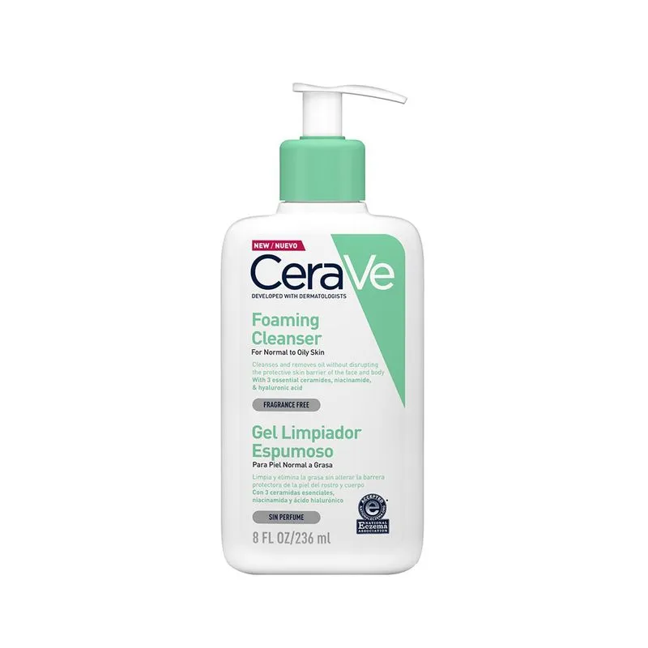
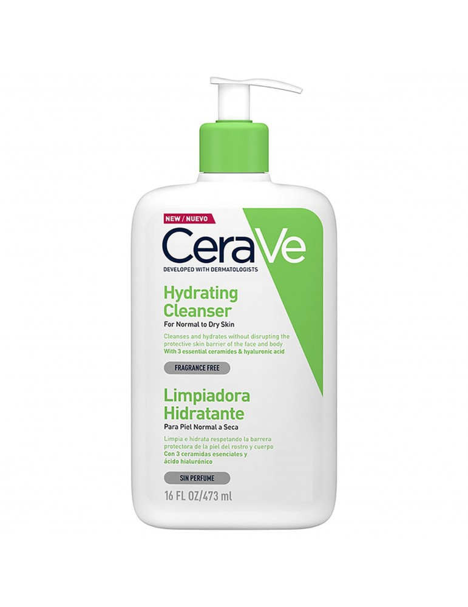

Es un tipo de rutina de cuidado para la piel, ayuda a mantenerla limpia, hidratada, saludable y evita los efectos de envejecimiento prematuro. Este tipo de cuidado permite tener la piel luminosa y fresca.
¿como debe ser tu rutina de skin care? A la hora de cuidar tu piel es importante tener en cuenta cuales son sus características para saber que producto usar. Aquí podras profundizar sobre los diferentes tipos de piel que existen para que identifiques cual es el tuyo. Los mas comunes son:
La piel mixta suele presentarse con piel no homogénea. En particular, algunas áreas del rostro tienden a ser más grasas y otras más secas.En la cara, las áreas grasas se encuentran en la "zona T":
Frente,Nariz,Barbilla,Las zonas más secas, por otro lado, son: Mejillas y el Contorno de ojos
Ir a la página.La piel seca suele tener un aspecto opaco y áspero, a menudo acompañado de sensación de tirantez e irritación. Este tipo de piel carece de los lípidos necesarios para retener la humedad de manera efectiva, resultando en una apariencia deshidratada en la que los poros no suelen ser visibles.
Ir a la página.La piel normal se caracteriza por un equilibrio entre hidratación y sebo, lo que se traduce en una apariencia suave y uniforme. Por lo general, no presenta excesiva grasa ni sequedad, y es menos propensa a imperfecciones como el acné. Los poros son finos y la tez, luminosa.
Ir a la página.La piel grasa es bastante fácil de identificar, ya que ciertos signos clínicos son típicos de la hiperseborrea. La piel grasa presenta un aspecto más brillante debido al exceso de sebo, y suele ser propensa a la aparición de granitos y puntos negros.
Ir a la páginaUna vez que identifiques que tipo de piel tienes, es importante que elijas los productos adecuados para ti. La rutina de skin care puede variar deacuerdo a las condiciones que presente tu piel y lo que desees tratar en ella.
Teniendo en cuenta esto, ya puedes elegir los productos para tu skin care. A continuación te contamos cómo podría ser una rutina de skincare para día o noche completa que funciona para todo tipo de piel:
1. Jabón para limpiar tu cara.
2. Exfoliación.
3. Tónico.
4. Serum o suero facial.
5. Contorno de ojos.
6. Crema hidratante.
7. Protector solar con mínimo 50 SPF.
1. Agua micelar para desmaquillar.
2. Jabón para limpiar los excesos.
3. Mascarillas faciales para exfoliar y tratar los poros abiertos.
4. Sérum con vitamina C para unificar el tono.
5. Contorno de ojos.
6. Crema hidratante para aportar la hidratación suficiente a tu piel.
Lo más importante en una rutina de skin care es la hidratación y la protección solar. Estos 2 pasos son el mínimo vital que debes garantizar a tu piel.
El resto de los pasos le darán un aspecto mucho más iluminado y sano; pero los indispensables son hidratación y protección.
A continuacion te mencinaremos el orden de aplicación de los productos de skin care incluyendo los más comunes, recuerda que esto no quiere decir que debas utilizarlos todos, esto dependerá de las necesidades de tu piel:
1. Agua micelar.
2.Jabón facial.
3.Mascarilla.
4.Tónico.
5.Suero de vitamina C.
6.suero de niacinamida.
7.Suero hidratante con ácido hialurónico.
8.Contorno de ojos.
9.Crema hidratante.
10.Protector solar.
Se recomienda regularmente marcas como CeraVe, Eucerin y Cetaphil, que se dice que son unas de las mejores marcas.
Cetaphil es la marca # 1 de cuidado de la piel facial recomendada por médicos # 1 en los EE. UU. También se ha demostrado que los limpiadores e hidratantes Cetaphil defienden contra la sequedad, la irritación,la aspereza, entre otras.
Ir a la página.Cerave es una de las marcas número 1 recomendada por los dermatólogos. No importa si necesitas productos para piel grasa, seca o mixta , CeraVe te ofrece un producto dependiendo tu tipo de piel
Ir a la página.Estas cremas suelen ser elogiadas por su capacidad para hidratar y humedecer la piel. Muchas personas también informan de que las cremas Eucerin tienen una fórmula no grasa que se absorbe rápidamente en la piel.
Ir a la página.Es importante que tengas en cuenta que estos productos son dependiendo de tu tipo de piel, por ejemplo en CeraVe tu puedes encontrar variedad de productos dependiendo de tu tipo y el manejo que desees darle a ella.
| Piel normal a piel grasa. |  | Piel normal a piel seca. |  |